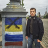
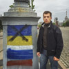

1 of march
1 березня
1 марта
2 of march
Full mobilization and readiness was declared in Ukraine.
2 березня
В Україні оголосили повну мобілізацію і боєготовність.
2 марта
В Украине объявили полную мобилизацию и боеготовность.
8 of march
A column of Russian military trucks drove to Simferopol.
8 березня
Колона російських військових вантажівок в'їхала до Сімферополя.
8 марта
Колонна российских военных грузовиков въехала в Симферополь.
15 of march
In Arabat Spit hundred Russian militaries linked border with Ukraine.
15 березня
На Арабатській стрілці сотні російських військових перешли кордон з Україною.
15 марта
На Арабатской стрелке сотни российских военных перешли границу с Украиной.
17 of march
Illegitimate parliament of Crimea proclaimed an independent state.
17 березня
Нелегітимний парламент об’явив Крим незалежною державою.
17 марта
Нелегитимный парламент объявил Крым независимым государством.
21 of march
Ukrainian sailors refused to move to the side of the invaders.
21 березня
Українські моряки відмовились переходити на сторону окупантів.
21 марта
Украинские моряки отказались переходить на сторону оккупантов.
24 of march
The last Ukrainian military base is captured in Crimea.
24 березня
У Криму захоплено останню українську військову базу.
24 марта
В Крыму захвачена последняя украинская военная база.
27 of march
Ukraine agreed with Russia on the withdrawal of its military equipment from the Crimea.
27 березня
Україна домовилась з росіянами про виведення військової техніки з Криму.
27 марта
Украина договорилась с россиянами про выведение военной техники из Крыма.
28 of march
Ukrainian troops leave the occupied territory of Crimea.
28 березня
Українські військові залишають територію окупованого Криму.
28 марта
Украинские военные оставляют территорию оккупированного Крыма.
1 of april
Ukrainian militaries are unable to leave the Crimea and ask for help.
1 квітня
Українські військові не мають змоги виїхати з Криму і просять допомоги.
1 апреля
Украинские военные не имеют возможности выехать из Крыма и просят о помощи.
3 of april
Viktor Yanukovych and former head of the SSU Yakymenko personally led the organization of mass murder of people on Maidan, under the guise of so-called anti-terrorist operation.
3 квітня
Віктор Янукович і колишній голова СБУ Якименко особисто керували організацією масових убивств людей на Майдані Незалежності, під прикриттям так званої антитерористичної операції.
3 апреля
Виктор Янукович и бывший глава СБУ Якименко лично командовали организацией массовых убийств людей на Майдане Независимости, под прикрытием так называемой антитеррористической операции.
7 of april
The separatists seized east Ukraine and require separation. They took of the authorities in Kharkiv, Luhansk and Donetsk.
7 квітня
Сепаратисти захопили схід України і вимагають відокремлення. Вони взяли під контроль органи влади у Харкові, Луганську і Донецьку.
7 апреля
Сеператисты захватили восток Украины и требуют отделения. Они взяли под контроль органы власти в Харькове, Луганске и Донецке.
8 of april
In Donetsk, the separatists proclaimed the People's Republic.
8 квітня
У Донецьку сепаратисти проголосили народну республіку.
8 апреля
В Донецке сепаратисты провозгласили народную республику.
11 of april
Yatsenyuk consulted politicians and businessmen in the East about compromise with separatists.
11 квітня
Яценюк на Сході з політиками і бізнесменами радився про компроміси з сепаратистами.
11 апреля
Яценюк на Востоке советовался с политиками и бизнесменами о компромиссах с сепаратистами.
16 of april
In the East, locals block the Ukrainian military.
16 квітня
На Сході місцеві жителі блокують українських військових.
16 апреля
На Востоке местные жители блокируют украинских военных.
22 of april
Dzhemilev was deported from Crimea for 5 years.
22 квітня
Джемілєва депортували з Криму на 5 років.
22 апреля
Джемилева депортировали из Крыма на 5 лет.
24 of april
Russian troops under the guise of training exercises are very close to Ukraine.
24 квітня
Російські війська під виглядом навчань впритул наблизились до України.
24 апреля
Российские войска под видом учений впритык приблизились к Украине.
2 of may
In Odesa, a peaceful march of fans for unity was attacked by pro-Russian activists. During the clashes one activist of the march shot dead.
2 травня
В Одесі на мирну ходу фанатів за єдність напали проросійські активісти. Під час сутичок застрелили активіста з мирної ходи.
2 мая
В Одессе на мирное шествие фанатов за единство напали пророссийские активисты. Во время столкновений застрелили активиста мирного шествия.
5 of may
46 dead, more than two hundred wounded as a result of dramatic events in Odesa.
5 травня
46 загиблих, понад дві сотні поранених унаслідок драматичних подій в Одесі.
5 мая
46 погибших, более двух сотен раненых в результате драматических событий в Одессе.
17 of may
In Kiev people came for the evening-requiem in honor of the 70th anniversary of deportation of the Crimean Tatars.
17 травня
У Києві вийшли на вечір-реквієм на честь 70-ї річниці депортації кримських татар.
17 мая
В Киеве вышли на вечер-реквием в честь 70-й годовщины депортации крымских татар.
25 of may
From eight in the morning Ukrainians begun to determine who will be the fifth president of their country.
25 травня
З восьмої ранку українці почали визначатися, хто стане п'ятим президентом країни.
25 мая
С восьми утра украинцы начали определяться, кто станет пятым президентом страны.
27 of may
Donetsk airport was cleared of Chechen fighters.
27 травня
Донецький аеропорт очистили від чеченських бойовиків.
27 мая
Донецкий аэропорт очистили от чеченських боевиков.
29 of may
People evacuate from Donetsk and Mariupol.
29 травня
З Донецька та Маріуполя евакуюються люди.
29 мая
Из Донецка и Мариуполя эвакуируются люди.
7 of june
Petro Poroshenko officially took up the post of President of Ukraine.
7 червня
Петро Порошенко офіційно заступив на посаду Президента України.
7 июня
Петр Порошенко официально вступил на должность Президента Украины.
12 of june
Terrorists have taken 16 orphans from Snizhne to Russia.
12 червня
Терористи вивезли 16 дітей-сиріт із Сніжного в Росію.
12 июня
Террористы вывезли 16 детей-сирот из Снежного в Россию.
14 of june
Overnight in Lugansk terrorists shot down military transport plane with forty-nine Ukrainian militaries. They were paratroopers from Dnipropetrovsk 25 brigade.
14 червня
Вночі у Луганську терористи збили військово-транспортний літак із сорока дев'ятьма українськими військовими. Це були десантники з Дніпропетровської 25 бригади.
14 июня
Ночью в Луганске террористы сбили военно-транспортный самолет с сорока девятью украинскими военными. Это были десантники из Днепропетровской 25 бригады.
16 of june
Gazprom cut off gas supplies to Ukraine.
16 червня
Газпром перекрив постачання газу до України.
16 июня
Газпром перекрыл поставку газа в Украину.
18 of june
Last night 15 soldiers were killed, near the village Schastya in the Luhansk region died 11 members of ATO. Another 4 soldiers were killed near village Metalist.
18 червня
Минулої ночі загинули 15 військовослужбовців: поблизу селища Щастя на Луганщині було вбито 11 учасників АТО. Ще 4 наші бійці загинули біля селища Металіст.
18 июня
Прошлой ночью погибли 15 военнослужащих: возле поселка Счастье в Луганской области было убито 11 участников АТО. Еще 4 наших бойца погибли возле поселка Металлист.
20 of june
According to the UN, 38,000 inhabitants of the East of Ukraine and Crimea became refugees.
20 червня
За даними ООН, 38 тисяч жителів Сходу України та Криму стали біженцями.
20 июня
По данным ООН, 38 тысяч жителей Востока Украины и Крыма стали беженцами.
12 militaries were killed and 46 wounded in fighting near Krasny Lyman.
12 військових загинули та 46 поранені в боях під Красним Лиманом.
12 военных погибли и 46 ранены в боях под Красным Лиманом.
24 of june
Fighters hit helicopter "Mi-8" near the mountain Karachun in northern outskirts of Slovyansk. All 9 militaries on board were killed.
24 червня
Бойовики поцілили вертоліт "Мі-8" біля гори Карачун, це північна околиця Слов'янська. Усі 9 військових на борту загинули.
24 июня
Боевики попали в вертолет «Ми-8» возле горы Карачун на северной окраине Славянска. Все 9 военных на борту погибли.
7 of july
Mass executions of people on Maidan in February were carried out by a criminal group headed by former President Yanukovych as claims the commission. It included all members of the government, some Deputy Ministers, Commander of Interior Troops, judges of Pechersk court.
7 липня
Масові розстріли людей на Майдані у лютому здійснило злочинне угрупування на чолі із колишнім президентом Януковичем, стверджує комісія. До нього входили усі члени уряду, частина заступників міністрів, командувач внутрішніх військ, судді Печерського суду.
7 июля
Массовые расстрелы на Майдане в феврале совершила преступная группировка во главе с бывшим президентом Януковичем , утверждает комиссия. В нее входили все члены власти, часть заместителей министров, командующий внутренних войск, судьи Печерского суда.
11 of july
23 Ukrainian soldiers were killed last night. 19 of them are the paratroopers died in Zelenopillya. 93 soldiers wounded.
11 липня
23 бійці української армії загинули за останню добу. 19 з них – це десантники у Зеленопіллі. 93 бійці поранені.
11 июля
23 бойца украинской армии погибли за последние сутки. 19 из них – это десантники под Зеленопольем. 93 бойца ранены.
14 of july
14 липня
14 июля
15 of july
15 липня
15 июля
17 of july
Over Torez of Donetsk region terrorists shot down a Boeing 777 – a passenger plane flying from Amsterdam to the Malaysian capital Kuala Lumpur. There were 280 passengers and 15 crew members on the board. The plane was shot down by militants with the anti-missile system "Buk".
17 липня
Над Торезом на Донеччині терористи збили пасажирський літак Боїнг 777, який летів з Амстердама до столиці Малайзії Куала Лумпур. На борту знаходилося 280 пасажирів і 15 членів екіпажу. Літак збили бойовики із зенітно-ракетного комплексу "Бук".
17 июля
Над Торезом в Донецкой области террористы сбили пассажирский самолет Боинг 777, который летел из Амстердама в столицу Малайзии Куала Лумпур. На борту находилось 280 пассажиров и 15 членов экипажа. Самолет сбили боевики из зенитно-ракетного комплекса «Бук».
23 of july
In the Donetsk region the terrorists shot down two Ukrainian Su-25. Pilots ejected, but on the territory controlled by militants.
23 липня
На Донеччині терористи збили два українські штурмовики Су-25. Пілоти катапультувалися, але на територію, що контролюється бойовиками.
23 июля
В Донецкой области террористы сбили два украинских штурмовика Су-25. Пилоты катапультировались, но на территорию, контролируемую боевиками.
27 of july
40 orphans under the age of three years, which last night were taken illegally under duress and without documents to the Russian Federation, returned to Ukraine.
27 липня
40 дітей сиріт віком до трьох років, яких вчора вночі незаконно під примусом і без документів вивезли на територію Російської Федерації, повернули в Україну.
27 июля
40 детей сирот возрастом до трех лет, которых вчера ночью незаконно по принуждению и без документов вывезли на территорию Российской Федерации, вернули в Украину.
30 of july
Since the beginning of active fighting 363 Ukrainian militaries were killed. 1434 ones were injured.
30 липня
З початку активних бойових дій загинули 363 українських військових. Поранення отримали 1434.
30 июля
С начала активних боевых действий погибли 363 украинских военных. Ранения получили 1434.
31 of july
31 липня
31 июля
3 of august
The remains of "Boeing-777", which were found by the experts were sent to Kharkiv.
3 серпня
До Харкова направили останки "Боїнга-777", які знайшли під час роботи експерти.
3 августа
В Харьков направили останки «Боинга-777», которые нашли во время работ эксперты.
4 of august
The remains of those killed in the crash of Boeing-777 were sent to the Netherlands. This is the fourth flight.
4 серпня
Останки загиблих у катастрофі Боїнга-777 відправили до Нідерландів . Це вже четвертий рейс.
4 августа
Останки погибших в катастрофе Боинга-777 отправили в Нидерланды. Это уже четвертый рейс.
6 of august
According to the UN in Donbas 1367 people died during the period of ATO.
6 серпня
За даними ООН на Донбасі загинуло 1367 людей за період АТО.
6 августа
По данным ООН на Донбассе погибло 1367 людей за период АТО.
12 of august
ATO forces liberated three more towns from terrorists: Pervomais'k, Komyshuvaha and Kalynovo.
12 серпня
Сили АТО звільнили ще три населених пункти від терористів: Первомайськ, Комишуваху та Калинове.
12 августа
Силы АТО освободили еще три населенных пункта от террористов: Первомайск, Комишуваху и Калиново.
17 of august
17 серпня
17 августа
18 of august
Terrorists shot a column of refugees in Luhansk region. Among the victims are women and children, at least 17 people.
18 серпня
Терористи розстріляли колону біженців на Луганщині. Серед загиблих – жінки та діти: щонайменше - 17 людей.
18 августа
Террористы расстреляли колонну беженцев в Луганской области. Среди погибших – женщины и дети: наименьшее - 17 людей.
20 of august
34 civilians were killed in Donbass during last day.
20 серпня
34 мирних мешканця Донбасу загинули за останню добу.
20 августа
34 мирных жителя Донбасса погибли за последние сутки.
22 of august
Direct invasion of Russian convoys on Ukrainian territory, without the permission of the Ukrainian side, unaccompanied by Red Cross Russian convoy moved on Ukrainian territory. What is exactly in trucks is not known.
22 серпня
Пряме вторгнення російського конвою на українську територію: без дозволу української сторони, без супроводу Червоного Хреста російський конвой рушив на українську територію. Що у вантажівках - не відомо.
22 августа
Прямое вторжение российского конвоя на украинскую территорию: без разрешения украинской стороны, без сопровождения Красного Креста российский конвой направился на украинскую территорию. Что в грузовиках – не известно.
25 of august
25 серпня
25 августа
29 of august
Trying to escape from Ilovaisk Ukrainian soldiers were ambushed.
29 серпня
При спробі вирватися з Іловайська українські бійці потрапили у засідку.
29 августа
При попытке вырваться из Иловайска украинские бойцы попали в засаду.
30 of august
It is known only about 28 soldiers who disentangled near Ilovaisk.
30 серпня
Достеменно відомо про 28 військових, які вийшли з оточення під Іловайськом.
30 августа
Точно известно о 28 военных, которые вышли из окружения под Иловайском.
3 of september
In Kiev the first Heavenly Hundred monument was opened in National Pedagogical University named after Dragomanov.
3 вересня
В Києві відкрили перший пам'ятник Небесній Сотні на території національного педагогічного університету ім. Драгоманова.
3 сентября
В Киеве открыли первый памятник Небесной Сотне на территории национального педагогического университета им. Драгоманова.
4 of september
During the ATO 837 Ukrainian servicemen were killed and more than three thousand wounded.
4 вересня
Під час АТО загинули 837 українських військовослужбовців і понад три тисячі дістали поранення.
4 сентября
Во время АТО погибли 837 украинских военнослужащих и более трех тысяч получили ранения.
16 of september
Verkhovna Rada and the European Parliament simultaneously ratified Association Agreement with the EU.
16 вересня
Верховна Рада та Європарламент синхронно ратифікували Угоду про асоціацію з ЄС.
16 сентября
Верховная Рада и Европарламент синхронно ратифицировали Соглашение про ассоциацию с ЕС.
17 of september
During terrorists’ attack at least 10 civilians were killed in village Nyzhnia Krynka of Donetsk region.
17 вересня
Під час обстрілу терористами загинули щонайменше 10 мирних жителів у селищі Нижня Кринка, що на Донеччині.
17 сентября
Во время обстрела террористами погибли минимум 10 мирных жителей в поселке Нижняя Крынка Донецкой области.
18 of september
President of Ukraine addressed the US Congress.
18 вересня
Президент України виступив в Конгресі США.
18 сентября
Президент Украины выступил в Конгрессе США.
19 of september
Ukraine will get from US a billion loan. Another 46 million of help the White House will provide for Ukrainian army. Such is a result of Ukrainian President Petro Poroshenko’s visit to the United States.
19 вересня
Україна отримає від США мільярдний кредит. Ще 46 мільйонів допомоги Білий дім дасть на українську армію.Такий підсумок візиту президента України Петра Порошенка до Сполучених Штатів Америки.
19 сентября
Украина получит от США миллиардный кредит. Еще 46 миллионов помощи Белый дом даст на украинскую армию. Такой итог визита президента Украины Петра Порошенко в Соединенные Штаты Америки.
29 of september
9 militaries were killed and 27 wounded over the past day in the ATO zone.
29 вересня
9 військових загинули і 27 були поранені за минулу добу в зоні АТО.
29 сентября
9 военных погибли и 27 были ранены за прошлые сутки в зоне АТО.
4 of october
“Berkut” officer Dmytro Sadovnyk has escaped from house arrest.
4 жовтня
Беркутівець Дмитро Садовник утік з-під домашнього арешту.
4 октября
Беркутовец Дмитрий Садовник убежал из-под домашнего ареста.
15 of october
More than a hundred fighters of armed forces and National Guard were surrounded near Slovianoserbsk of Luhansk region.
15 жовтня
Понад сотня бійців збройних сил та Нацгвардії опинилися в оточенні поблизу міста Слов’яносербськ на Луганщині.
15 октября
Более сотни бойцов вооруженных сил и Нацгвардии оказались в окружении возле города Словяносербск Луганской области.
16 of october
In Ukraine the law on lustration came into effect.
In Dnepropetrovsk 21 unknown heroes were paid last respects.
16 жовтня
В Україні запрацював закон про люстрацію.
У Дніпропетровську провели в останню путь 21 невідомого героя.
16 октября
В Украине заработал закон про люстрацию.
В Днепропетровске провели в последний путь 21 неизвестного героя.
18 of october
During the undeclared war in the Donbas 3,700 people were killed according to the data of UN Office for the Coordination of Humanitarian Affairs.
18 жовтня
Під час неоголошеної війни на Донбасі загинуло 3700 людей за даними Управління ООН з координації гуманітарних питань.
18 октября
Во время необъявленной войны на Донбассе погибло 3700 людей по данным Управления ООН по координации гуманитарных вопросов.
26 of october
Today Ukrainians take part in early parliamentary election.
26 жовтня
Сьогодні українці позачергово обирають народних депутатів.
26 октября
Сегодня украинцы внеочередно выбирают народных депутатов.
31 of october
Ukraine, Russia and the EU signed a package of gas agreements: "Naftogaz" will buy Russian fuel for 378 dollars per thousand cubic meters till the end of the year.
31 жовтня
Україна, Росія та Євросоюз підписали пакет газових угод: до кінця року «Нафтогаз» купуватиме російське паливо по 378 доларів за тисячу кубометрів.
31 октября
Украина, Россия и Евросоюз подписали пакет газовых соглашений: до конца года «Нефтегаз» будет покупать российское топливо по 378 долларов за тысячу кубометров.
1 of november
The Association Agreement between Ukraine and the EU takes effect partly.
1 листопада
Угода про асоціацію між Україною і Євросоюзом частково набуває чинності.
1 ноября
Соглашение про ассоциацию Украины с Евросоюзом частично вступает в силу.
5 of november
Terrorists dropped shells into a school in Donetsk: two children were killed and four wounded.
5 листопада
Терористи обстріляли школу в Донецьку: двоє дітей загинули, ще четверо поранені.
5 ноября
Террористы обстреляли школу в Донецке: двое детей погибли, еще четверо ранены.
7 of november
By 1 December pensioners from ATO zone have to re-register to receive their pensions.
7 листопада
До 1 грудня пенсіонери із зони АТО мають перереєструватись, щоб отримувати пенсію.
7 ноября
До 1 декабря пенсионеры из зоны АТО должны перерегистрироваться, чтобы получать пенсию.
17 of november
Militants admitted Dutch experts to the place of "Boeing" crash.
17 листопада
Бойовики допустили на місце катастрофи "Боїнга" нідерландських експертів.
17 ноября
Боевики пустили на место катастрофы «Боинга» нидерландских экспертов.
21 of november
Ukraine celebrates anniversary of Euromaydan. Now this is a public holiday.
21 листопада
Україна відзначає річницю Євромайдану. Тепер це державне свято.
21 ноября
Украина отмечает годовщину Евромайдана. Теперь это государственный праздник.
26 of november
SSU and NATO are trying to confront information war of Russia.
26 листопада
СБУ та НАТО намагаються протистояти інформаційній війні Росії.
26 ноября
СБУ и НАТО пытаются противостоять информационной войне России.
27 of november
The new Verkhovna Rada convened for the first meeting.
27 листопада
Нова Верховна Рада зібралась на перше засідання.
27 ноября
Новая Верховная Рада собралась на первое заседание.
29 of november
There is a "Memorial Night” on Maidan on the anniversary of brutal dispersal of Euromaidan activists by Berkut.
29 листопада
На Майдані - "Ніч пам'яті" з нагоди річниці жорстокого розгону Беркутом активістів Євромайдану.
29 ноября
На Майдане - «Ночь памяти» по случаю годовщины жестокого разгона Беркутом активистов Евромайдана.
9 of december
Ukraine returned part of lands captured by Russia. Now the Russians leave their positions, and our guards are strengthening on the geographical limits of the continental Ukraine in Kherson region.
9 грудня
Україна повернула частину захоплених Росією земель. Зараз росіяни залишають свої позиції, а наші прикордонники укріплюються на географічній межі материкової України в Херсонській області.
9 декабря
Украина вернула часть захваченных Россией земель. Сейчас россияне оставляют свои позиции, а наши пограничники укрепляются на географической границе материковой Украины в Херсонской области.
11 of december
Heavenly Hundred is still growing. A habitant of Kyiv Alexander Gritsenko wounded during the events on the Maidan died after prolonged treatment and operations.
11 грудня
Небесна Сотня і досі поповнюється. Поранений під час подій на Майдані киянин Олександр Гриценко помер після тривалого лікування та проведення операцій.
11 декабря
Небесная Сотня до сих пор пополняется. Раненый во время событий на Майдане киевлянин Александр Гриценко умер после длительного лечения и проведения операций.
23 of december
Deputies abolished the neutral status of Ukraine.
23 грудня
Депутати скасували позаблоковий статус України.
23 декабря
Депутаты отменили позаблоковый статус Украины.
26 of december
"Ukrzaliznytsia" ceases to make routes to the Crimea. Also bus transport communication between mainland Ukraine and Crimea is stopped.
The largest exchange of captives took place today in the area of ATO: 150 Ukrainian soldiers received freedom.
26 грудня
"Укрзалізниця" припиняє здійснювати маршрути до Криму. Також призупинене і автобусне сполучення материкової України з Кримом.
Найбільший обмін полоненими відбувся сьогодні в зоні АТО: свободу отримали 150 українських вояків.
26 декабря
«Укрзализныця» прекращает осуществлять маршруты в Крым. Также приостановлено и автобусное сообщение материковой Украины с Крымом.
Наибольший обмен пленными состоялся сегодня в зоне АТО: свободу получили 150 украинских военных.
29 of december
900 Ukrainians are in captivity to militants.
29 грудня
У полоні бойовиків перебувають близько 900 українців.
29 декабря
В плену у боевиков пребывает около 900 украинцев.
5 of january
Militants captured seven Ukrainian soldiers. They were returning from the zone of ATO in rotation and hit the enemy checkpoint.
5 січня
Бойовики взяли у полон 7 українських військових. Вони повертались із зони АТО на ротацію і потрапили на ворожий блокпост.
5 января
Боевики взяли в плен 7 украинских военных. Они возвращались из зоны АТО на ротацию и попали на вражеский блокпост.
13 of january
Terrorists hit a passenger bus in Volnovakha: 13 victims.
13 січня
Терористи влучили в пасажирський автобус під Волновахою: 13 загиблих.
13 января
Террористы попали в пассажирский автобус под Волновахой: 13 погибших.
15 of january
Terrorists shot Donetsk airport.
15 січня
Терористи розстрілюють Донецьке летовище.
15 января
Террористы растреливают Донецкий аэропорт.
21 of january
In the area of ATO it is began operating "pass control".
21 січня
У зоні АТО почав діяти «режим перепусток».
21 января
В зоне АТО начал действовать «режим пропусков».
23 of january
Ukraine has introduced a heavy patrolling security because of terrorist attack threat.
23 січня
В Україні вводять посилений режим патрулювання через загрозу терактів.
23 января
В Украине вводят усиленный режим патрулирования из-за угрозы террактов.
26 of january
Starting today emergency mode is introduced in Donetsk and Lugansk regions.
26 січня
Відсьогодні на територіях Донецької та Луганської областей запроваджено режим надзвичайної ситуації.
26 января
С сегодняшнего дня на территориях Донецкой и Луганской областей введен режим чрезвычайной ситуации.
27 of january
60 children were killed during the fighting in the east of Ukraine.
27 січня
60 дітей загинули під час бойових дій на Сході України.
27 января
60 детей погибли во время боевых действий на Востоке Украины.
31 of january
12 residents of Debaltsevo died under fire fighters today.
31 січня
12 жителів Дебальцевого сьогодні загинуло під обстрілами бойовиків.
31 января
12 жителей Дебальцево погибли сегодня под обстрелами боевиков.
7 of february
Number of internal migrants in Ukraine has reached 980 thousand people - UN Agency for Refugees.
7 лютого
Кількість внутрішніх переселенців в Україні сягнула 980 тисяч людей, - Агентство ООН у справах біженців.
7 февраля
Количество внутренних переселенцев в Украине достигло 980 тысяч людей, - Агентство ООН по делам беженцев.
12 of february
In Minsk it was agreed on ceasefire and constitutional reform.
12 лютого
В Мінську домовилися про припинення вогню та конституційну реформу.
12 февраля
В Минске договорились о прекращении огня и конституционной реформе.
18 of february
More than 100 wounded from Debaltseve were taken to Artemivsk hospital.
18 лютого
До лікарні Артемівська доставили понад 100 поранених з Дебальцева.
18 февраля
В больницу Артемовска доставили более 100 раненых из Дебальцево.
20 of february
Thousands of people came on Maidan to honor the heroes of Heavenly hundred.
According to official data, during the confrontation on Maidan last year 106 people were killed. And two to 5 dozen - are missing.
20 лютого
Тисячі людей прийшли на Майдан вшанувати пам'ять героїв Небесної сотні.
За офіційними даними, під час протистоянь на Майдані минулого року загинуло 106 людей. І ще від 2 до 5 десятків - зникли безвісти.
20 февраля
Тысячи людей пришли на Майдан почтить память героев Небесной сотни.
Согласно официальным данным во время противостояний на Майдане в прошлом году погибло 106 человек. И еще от 2 до 5 десятков – пропали без вести.
21 of february
139 Ukrainian soldiers released from captivity – P. Poroshenko.
21 лютого
139 українських військових звільнено з полону, - П. Порошенко.
21 февраля
139 украинских военных освободили из плена, - П. Порошенко.
22 of february
In Kharkiv a terrorist attack was carried out during the "March of dignity." The explosion killed 4 people, including the 15-year-old boy.
22 лютого
В Харькові здійснено теракт під час «Маршу гідності». Від вибуху загинуло 4 людини, серед яких був 15-річний хлопець.
22 февраля
В Харькове совершен теракт во время «Марша достоинства». От взрыва погибло 4 человека, среди которых был 15-летний мальчик.
23 of february
Two suspects in the shootings in Instytutska Street were detained and questioned. These are former employees of the special division "Berkut".
23 лютого
Затримали та допитують двох підозрюваних у розстрілах на Інститутській. Це співробітники колишнього спецпідрозділу «Беркут».
23 февраля
Задержаны и допрашиваются два подозреваемых в расстрелах на Институтской. Это сотрудники бывшего спецподразделения «Беркут».
1 of march
Four fighters of 128-th mountain infantry brigade were released from terrorist captivity.
1 березня
Із полону терористів звільнили чотирьох бійців 128-ї гірсько-піхотної бригади.
1 марта
Из плена террористов освободили четырех бойцов 128-й горно-пехотной бригады.
2 of march
Negotiations on gas issue between Ukraine, Russia and the EU began in Brussels.
Deputies made changes to pension legislation: a gradual increase of preferential pension age for women by five years and payments limit for working pensioners to 1 January 2016.
Nadiya Savchenko was awarded a title of "Hero of Ukraine" by President Poroshenko.
2 березня
В Брюселі почалися переговори між Україною, Росією та Євросоюзом щодо газового питання.
Депутати внесли зміни до пенсійного законодавства: поетапне підвищення пільгового пенсійного віку для жінок на 5 років та обмеження виплат працюючим пенсіонерам до 1 січня 2016 року.
Президент П. Порошенко присвоїв Надії Савченко звання «Герой України».
2 марта
В Брюсселе начались переговоры между Украиной, Россией и Евросоюзом по газовому вопросу.
Депутаты внесли изменения в пенсионное законодательство: поэтапное повышение льготного пенсионного возраста для женщин на 5 лет и ограничение выплат работающим пенсионерам до 1 января 2016 года.
Президент П. Порошенко присвоил Надежде Савченко звание «Герой Украины».
4 of march
At the Zasyadko mine explosion 33 miners died. Those who were lucky to surviveare with severe burns and injuries. Volunteers are helping the miners because of "DNR" did not let rescuers.
Ukrainian troops in the Luhansk region continue to withdraw heavy military equipment.
4 березня
На шахті імені Засядька стався вибух — 33 гірники загинули. Ті, кому пощастило вижити, з сильними опіками та травмами. Шахтарям допомагають волонтери, бо "ДНР" не впустили рятувальників.
Українські війська на Луганщині продовжують відведення важкої техніки.
4 марта
На шахте им. Засядько произошел взрыв – 33 горника погибли. Те, кому повезло выжить, с сильными ожегами и травмами. Шахтерам помогают волонтеры, т.к. «ДНР» не впустили спасателей.
Украинские войска в Луганской области продолжают отводить тяжелую технику.
5 of march
Malaysian Boeing was shot down over Ukraine by Russian missile "Buk". This is reported by the prosecutor's office of the Netherlands.
Nadiya Savchenko stopped a hunger strike and wrote an appeal to Ukrainians.
5 березня
Малайзійський Boeing MH17 над Україною було збито російською ракетою "Бук". Про це повідомляють у прокуратурі Нідерландів.
Надія Савченко припинила голодувати та написала звернення до українців.
5 марта
Малайзийский Boeing над Украиной сбили российской ракетой «Бук». Об этом сообщают в прокуратуре Нидерландов.
Надежда Савченко прекратила голодать и написала обращение к украинцам.
9 of march
Since the beginning of the year 356 Ukrainian militaries were killed in the area of ATO.
9 березня
З початку року в зоні АТО загинули 356 українських військових.
9 марта
С начала года в зоне АТО погибли 356 украинских военных.
12 of march
The Government of Ukraine reported on 100 days of its work.
12 березня
Уряд України прозвітував про 100 днів роботи.
12 марта
Правительство Украины отчиталось за 100 дней работы.
13 of march
Valentin Nalyvaychenko, a chairman of the SSU, said that 2483 men were saved with the help of the Center of exchange and recsue of captives.
13 березня
Голова СБУ Валентин Наливайченко повiдомив, що в результаті роботи Центру обміну та звільнення людей з полону вдалось врятувати 2483 людини.
13 марта
Глава СБУ Валентин Наливайченко сообщил, что в результате работы Центра обмена и освобождения людей с плена удалось спасти 2483 человека.
15 of march
In Donbass over 40,000 terrorists and Russian soldiers are fighting – ATO headquarters.
15 березня
На Донбасі воює понад 40 тисяч бойовиків і російських військовослужбовців, — штаб АТО.
15 марта
На Донбассе воюет более 40 тысяч боевиков и российских военнослужащих, - штаб АТО.
18 of march
President of Ukraine Petro Poroshenko signed the Law № 256-VIII "On Amendments to Article 10 of the Law of Ukraine" On special order of local government in particular areas of Donetsk and Lugansk regions. "
18 березня
Президент України Петро Порошенко підписав Закон № 256-VIII "Про внесення зміни до статті 10 Закону України "Про особливий порядок місцевого самоврядування в окремих районах Донецької та Луганської областей".
18 марта
Президент Украины Петр Порошенко подписал Закон № 256-VIII «Про внесение изменения в статью 10 Закона Украины «Про особый порядок местного самоуправления в отдельных районах Донецкой и Луганской областей».
20 of march
In Brussels starts a new round of gas negotiations between Ukraine and Russia.
20 березня
В Брюсселі стартує новий раунд газових переговорів між Україною і Росією.
20 марта
В Брюсселе стартует новый раунд переговоров между Украиной и Россией.
23 of march
The chairman of Verkhovna Rada Volodymyr Groisman signed a decree of the parliament on recognition of particular areas of Donetsk and Lugansk regions as temporarily occupied.
23 березня
Голова Верховної Ради Володимир Гройсман підписав постанову парламенту про визнання окремих територій Донецької та Луганської областей тимчасово окупованими.
23 марта
Глава Верховной Рады Владимир Гройсман подписал постановление парламента о признании отдельных территорий Донецкой и Луганской областей временно оккупированными.
24 of march
The last Ukrainian military base is captured in Crimea.
24 березня
У Криму захоплено останню українську військову базу.
24 марта
В Крыму захвачена последняя украинская военная база.
25 of march
A year of occupation: forced border with the Crimean Peninsula.
Igor Kolomoisky is no longer a governor of Dnipropetrovsk. Poroshenko accepted his resignation.
Poroshenko confirmed increase in the Armed Forces of Ukraine to 250 thousand people.
25 березня
Рік окупації: вимушений кордон з кримським півостровом.
Ігор Коломойський більше не губернатор Дніпропетровщини. Порошенко прийняв його відставку.
Порошенко затвердив збільшення ЗСУ до 250 тисяч осіб.
25 марта
Год оккупации: принужденная граница с крымским полуостровом.
Игорь Коломойский больше не губернатор Днепропетровской области. Порошенко принял его отставку.
Порошенко утвердил увеличение ВСУ до 250 тысяч человек.
28 of march
Thousands of people gathered for Veche “Dnipro is for Ukraine!” in Dnipropetrovsk.
22 tanks from Russia violated the border of Ukraine and drove into the territory of an independent state.
28 березня
У Дніпропетровську зібралися тисячі людей на віче "Дніпро за Україну!".
22 танки з Росії порушили кордон України і заїхали на територію незалежної держави.
28 марта
В Депропетровске собрались тысячи людей на вече «Днепро за Украину!»
22 танка из России нарушили границу Украины и заехали на территорию независимого государства.
31 of march
Ukraine investigates too long and poorly crimes against maidanivets - such conclusions were made by the International Advisory Commission of the Council of Europe.
Last day runs the world's only Crimean Tatar TV ATR. Occupation authorities refused to register it under the law of Russia.
31 березня
Україна надто довго і неякісно розслідує злочини над майданівцями - такі висновки Міжнародної дорадчої комісії при Раді Європи.
Останній день працює єдиний у світі кримськотатарський телеканал АТР. Окупаційна влада відмовилась зареєструвати його за російським законодавством.
31 марта
Украина слишком долго и некачественно расследует преступления против майдановцев – такие заключения Международной консультативной комиссии при Совете Европы.
Последний день работает единственный в мире крымскотатарский телеканал АТР. Оккупационная власть отказалась зарегистрировать его по российскому законодательству.
1 of april
From today, utility tariffs rise by times for Ukrainians.
1 квітня
Від сьогодні в рази зростають комунальні тарифи для українців.
1 апреля
С сегодняшнего дня в разы выростают тарифы для украинцев.
2 of april
60 thousand of mobilized Ukrainian participated in ATO since the conflict in the east.
The case of the shooting of people on Instytutska Street can not begin to be heard because of the absence of the jury.
2 квітня
60 тисяч мобілізованих українців взяли участь в АТО від початку конфлікту на Сході.
Справу про розстріл людей на Інститутській не можуть розпочати розглядати через відсутність суду присяжних.
2 апреля
60 тысяч мобилизованных украинцев приняли участие в АТО с начала конфликта на Востоке.
Дело о расстреле людей на Институтской не могут начать рассматривать из-за отсутствия суда присяжных.
6 of april
The situation in the area of ATO remains troubled - throughout the day Ukraine has lost six defenders.
6 квітня
Ситуація в зоні проведення АТО залишається неспокійною — впродовж доби Україна втратила шістьох захисників.
6 апреля
Ситуация в зоне АТО остается неспокойной – в течение суток Украина потеряла 6 защитников.
14 of april
Dnepropetrovsk again takes the wounded. This night in the hospital named after Mechnikov ten seriously wounded soldiers were taken.
In Kharkiv SBU apprehended saboteurs who made the attacks.
14 квітня
Дніпропетровськ знову приймає поранених. Цієї ночі у лікарню Мечникова доставили десятьох тяжкопоранених.
У Харкові СБУ затримала диверсантів, які здійснювали теракти.
14 апреля
Днепропетровск снова принимает ранених. Этой ночью в больницу Мечникова доставили десять тяжелораненых.
В Харькове СБУ задержала диверсантов, которые совершали теракты.
15 of april
SBU has information on Russian trace in shooting of Euromaidan.
15 квітня
СБУ має інформацію про російський слід у розстрілі Євромайдану.
15 апреля
СБУ имеет информацию про российский след в расстреле Евромайдана.
17 of april
The Lenin monuments were fallen in the east of Ukraine: in Stanitsa Luhanska and Kramatorsk.
17 квітня
Пам’ятники Леніну впали на Сході України: у Станиці Луганській і Краматорську.
17 апреля
Памятники Ленину упали на Востоке Украины: в Станице Луганской и Краматорске.
19 of april
The terrorists gave Ukraine 11 bodies of soldiers who died near Debaltseve.
19 квітня
Терористи передали Україні тіла 11 бійців, які загинули під Дебальцевим.
19 апреля
Террористы передали Украине тела 11 бойцов, которые погибли под Дебальцево.
21 of april
In Kharkiv "Berkut" officers were detained on suspicion in murders on Maidan.
21 квітня
У Харкові затримані «беркутівці» за підозрою у вбивствах на Майдані.
21 апреля
В Харькове задержаны «беркутовцы» по подозрению в убийствах на Майдане.
22 of april
More than one thousand miners who came this morning to make their demands to the government, broke through the guard at the Presidential Administration and are very close to the building.
22 квітня
Понад однієї тисячі шахтарів, які прийшли сьогодні вранці передати свої вимоги керівництву держави, прорвалися крізь охорону біля Адміністрації Президента і впритул наблизилися до будівлі.
22 апреля
Более одной тысячи шахтеров, которые пришли сегодня утром передать свои требования руководству государства, прорвались через охрану возле Администрации Президента и впритык приблизились к зданию.
25 of april
In Mykolaiv paratroopers complete the most extensive training in Ukraine since its independence. Thousands of paratroopers are present on the ground in Shyroky Lan.
25 квітня
На Миколаївщині десантники завершують наймасштабніші навчання за часів незалежності України. Тисячі десантників на полігоні у Широкому Лану.
25 апреля
В Николаеве десантники завершают самые масштабные учения со времен независимости Украины. Тысячи десантников на полигоне в Широком Лану.
26 of april
After the devastating earthquake in Nepal Foreign Ministry of Ukraine has established contact with 28 Ukrainians. There is no contact with another two dozen citizens of Ukrainians yet.
26 квітня
Після руйнівного землетрусу у Непалі МЗС України встановило контакт з 28-ма українцями. Ще з двома десятками громадян України зв'язку поки що немає.
26 апреля
После разрушительного землетрясения в Непале МИД Украины установило контакт с 28-ю украинцами. Еще с двумя десятками граждан Украины связи пока что нет.
27 of april
Ukraine has received no membership and visa-free regime because of no reforms implementation. These are the general conclusions of the summit "Ukraine-EU", held in Kiev.
There is a confirmation that the complex "Buk", which was used to shot down Malaysian liner was delivered to Donbas from Russia.
Currently, 91 Ukrainians’ fates in Nepal are unknown – Perebyynis.
27 квітня
Членства та безвізового режиму Україна не отримала, бо не встигла впровадити реформи. Такі загальні висновки саміту "Україна-ЄС", що пройшов у Києві.
З'явилося підтвердження, що комплекс "Бук", яким було збито малайзійський лайнер, був доставлений на Донбас із Росії.
Наразі невідома доля 91 українця в Непалі, — Перебийніс.
27 апреля
Членства и безвизового режима Украина не получила, потому что не успела ввести реформы. Такие общие выводы самита «Украина-ЕС», который прошел в Киеве.
Появилось подтверждение, что комплекс «Бук», которым был сбит малайзийский лайнер, был доставлен на Донбасс из России.
В данный момент неизвестна судьба 91 украинца в Непале, - Перебийнос.
28 of april
Savchenko was transferred to the city hospital, she began to eat.
28 квітня
Савченко перевели у міську лікарню, вона почала їсти.
28 апреля
Савченко перевели в городскую больницу, она начала есть.
1 of may
For today, according to the data from SSU more than 300 citizens of Ukraine, nearly 60 of them are civilians, are held hostage by terrorists in Donbass.
As of today, Ukraine's Foreign Ministry has information about the stay of 210 Ukrainians in Nepal, almost a hundred ready to be evacuated from this country.
1 травня
На сьогоднішній день за данними СБУ в заручниках у терористів на Донбасі залишаються понад 300 громадян України, майже 60 із них — це цивільні особи.
Станом на сьогодні, Міністерство закордонних справ України володіє інформацією про перебування на території Непалу 210 українців, майже сто готові евакуюватися з країни.
1 мая
На сегодняшний день по данным СБУ в заложниках у террористов на Донбассе остаются более 300 граждан Украины, более 60 из них – это гражданские лица.
На сегодняшний день, МИД Украины владеет информацией о пребывании на территории Непала 210 украинцев, почти сто готовы эвакуироваться.
2 of may
Odesa commemorates the victims of the riots on May 2 last year.
2 травня
Одеса поминає жертв масових заворушень 2 травня минулого року.
2 мая
Одесса поминает жертвы массовых беспорядков 2 мая пришлого года.
7 of may
The evacuation of Ukrainians from Kathmandu, which lasted for a week, is finally over.
7 травня
Евакуація українців із Катманду, яка розтягнулася на цілий тиждень, нарешті закінчилася.
7 мая
Эвакуация украинцев из Катманду, которая растянулась на целую неделю, наконец закончилась.
9 of may
Ukraine celebrates the 70th anniversary of victory over Nazism in the Second World War. This year there are no parades and fireworks.
9 травня
Україна відзначає 70-ту річницю здолання нацизму в Другій світовій. Цього року без парадів та салютів.
9 мая
Украина отмечает 70-ю годовщину победы над нацизмом во Второй мировой. В этом году без парадов и салютов.
15 of may
President Poroshenko signed into law on discommunization of Ukraine.
15 травня
Президент Порошенко підписав закони про декомунізацію України.
15 мая
Президент Порошенко подписал законы про декоммунизацию Украины.
16 of may
Militants of LNR banned the OSCE Mission to approach the Ukrainian-Russian border.
16 травня
Бойовики ЛНР заборонили місіi ОБСЄ наближатися до українсько-російського кордону.
16 мая
Боевики ЛНР запретили миссии ОБСЕ приближаться к украинско-российской границе.
17 of may
Bloody day in the area of ATO: Ukraine has lost three fighters, a dozen more wounded.
17 травня
Кривава доба в зоні АТО: Україна втратила 3 бійців, ще півтора десятка поранені.
17 мая
Кровавые сутки в зоне АТО: Украина потеряла 3 бойцов, еще полтора десятка ранены.
18 of may
The Kremlin disowns Russian special operations soldiers detained in Donbas.
18 травня
Кремль відхрестився від затриманих на Донбасі російських спецпризначенців.
18 мая
Кремль отказался от задержаных на Донбассе российских спецназовцев.
19 of may
There was a battle near Zolote-Katerynivka in Luhansk region - 6 Ukrainian soldiers were killed and 6 wounded.
Detained Russian scouts give testimony in the disfavour of Russia.
Verkhovna Rada appointed Yuri Terentyev as the head of the Antimonopoly Committee of Ukraine.
19 травня
На Луганщині у районі Золоте-Катеринівка точився бій - 6 українських бійців загинули і 6 поранені.
Затримані російські розвідники дають свідчення не на користь Росії.
Верховна Рада призначила головою Антимонопольного комітету Юрія Терентьєва.
19 мая
В Луганской области в районе Золото-Катериновка точился бой – 6 украинских бойцов погибли и 6 ранены.
Задержанные российские разведчики дают показания не в пользу России.
Верховная Рада назначила главой Антимонопольного комитета Юрия Терентьева.
20 of may
Dnepropetrovsk received per day the highest number of wounded for the last two months - the number is 19.
20 травня
Дніпропетровськ за добу прийняв найбільшу за останні два місяці кількість поранених: 19.
20 мая
Днепропетровск за сутки принял наибольшее за последние два месяца количество раненых: 19.
26 of may
Luhansk region suffers from intensive shooting by the militants. They use prohibited weapons more and more aggressively, including even tanks.
26 травня
Луганщина потерпає від потужних обстрілів бойовиків. Вони дедалі активніше застосовують заборонену зброю. Дійшло вже навіть до танків.
26 мая
Луганская область страдает от мощных обстрелов боевиков. Они все активнее используют запрещенное оружие, вплоть до танков.
30 of may
Myheil Saakashvili became a governor of Odesa region.
30 травня
Михеїл Саакашвілі став губернатором Одещини.
30 мая
Михеил Саакашвили стал губернатором Одесской области.
3 of june
In Maryinka (Donetsk region) as a result of fightings 28 people were killed.
3 червня
У Мар'їнці (Донецька область) в результаті боїв загинули 28 людей.
3 июня
В Марьинке (Донецкая область) в результате боев погибли 28 человек.
4 of june
Within 24 hours in Kharkiv military hospital 42 soldiers were taken from the zone of ATO.
One more evromaydanivets joined Heavenly hundred. Victor Orlenko died in the hospital. During more than a year he was fighting for his life after being wounded on Maidan.
4 червня
У Харківський військовий шпиталь за останню добу доправили 42 бійця із зони АТО.
Ще один євромайданівець приєднався до Небесної сотні. У лікарні помер Віктор Орленко, який більше року боровся за життя після поранення на Майдані.
4 июня
В Харьковский военный госпиталь за последние сутки доставили 42 бойца из зоны АТО.
Еще один евромайдановец присоединился к Небесной сотне. В больнице умер Виктор Орленко, который больше года боролся за жизнь после ранения на Майдане.
7 of june
A year has passed since Poroshenko’s inauguration.
7 червня
Рік з інавгурації Порошенка.
7 июня
Год после инаугурации Порошенко.
8 of june
Seven sappers were killed in antitank mine blast near Krasnogorivka in Donetsk region.
Fire near Kyiv - two fuel tanks are burning at a tank farm in small town Hlevaha near Vasylkiv.
8 червня
Семеро солдатів-саперів загинули, підірвавшись на протитанковій міні поблизу Красногорівки Донецької області.
Пожежа під Києвом - у смт Глеваха, що поблизу Василькова, на нафтобазі горять два резервуари з паливом.
8 июня
Семь солдат-саперов погибли, подорвавшись на протитанковой мине возле Красногоровки Донецкой области.
Пожар под Киевом - в пгт Глеваха, что рядом с Васильковом, на нефтебазе горят два резервуара с топливом.
9 of june
As it is known for today three firemen and two employees died at the tank farm near Vasylkiv.
9 червня
Станом на зараз відомо, що на нафтобазі поблизу Василькова загинуло три пожежники і двоє працівників.
9 июня
Состоянием на сегодня известно, что на нефтебазе возле Василькова погибло три пожарника и два работника.
10 of june
Rescuers are struggling with large-scale fire at the tank farm. A terrible fire has taken away the lives of four people.
10 червня
Рятувальники борються з масштабною пожежею на нафтобазі. Страшний вогонь вже забрав життя чотирьох людей.
10 июня
Спасатели борются с масштабным пожаром на нефтебазе. Страшный огонь уже забрал жизни четырех людей.
11 of june
In the morning there was again an explosion at the burning tank farm. Three tanks are still burning. The number of victims has risen to 6 people.
11 червня
Вранці на палаючій нафтобазі знову пролунав вибух. Досі палають три ємності. Кількість жертв зросла до 6 осіб.
11 июня
Утром на пылающей нефтебазе снова прозвучал взрыв. До сих пор пылает три емкости. Количество жертв возросло до 6 человек.
12 of june
Four members of the Interior Ministry were detained. They gave 408 assault rifles to "titushkas» during the period of Maidan.
12 червня
Затримано чотирьох співробітників МВС, які під час Майдану видали «тітушкам» 408 автоматів.
12 июня
Задержаны четыре сотрудника МВД, которые во время Майдана выдали «титушкам» 408 автоматов.
13 of june
Today is the anniversary of the liberation of Mariupol from terrorists.
13 червня
Річниця звільнення Маріуполя від терористів.
13 июня
Годовщина освобождения Мариуполя от террористов.
17 of june
Because of drought occupied Crimea lost about half of this year's harvest and will not be able to provide itself with the food.
17 червня
Через засуху окупований Крим втратив приблизно половину цьогорічного врожаю і не зможе забезпечити себе продуктами.
17 июня
Из-за засухи окупированный Крым потерял приблизительно половину урожая этого года и не сможет обеспечить себя продуктами.
18 of june
The situation in the east is escalated. During the day Ukraine has lost in the east three defenders, 14 suffered wound.
The Verkhovna Rada dismissed Valentin Nalyvaychenko from the post of chairman of the Security Service of Ukraine.
18 червня
Ситуація на Сході країни загострюється. За добу Україна втратила на Сході трьох своїх захисників, 14 отримали поранення.
Верховна Рада звільнила Валентина Наливайченка з посади голови Служби безпеки України.
18 июня
Ситуация на Востоке страны обостряется. За сутки Украина потеряла на Востоке трохи своїх защитников, 14 получили ранения.
Верховная Рада уволила Валентина Наливайченко с должности главы СБУ.
19 of june
The Venice Commission has recognized the right of Ukraine to "automatic" lustration.
Today starts the sixth wave of mobilization in Ukraine.
In Ukraine, began the trial in absentia of an ex-president, a fugitive Viktor Yanukovych and a former Minister of Revenu and Duties Olexander Klymenko.
19 червня
Венеціанська комісія визнала право України на «автоматичну» люстрацію.
Сьогодні стартує шоста хвиля мобілізації в Україні.
В Україні розпочався заочний суд над екс-президентом-втікачем Віктором Януковичем та колишнім міністром доходів і зборів Олександром Клименком.
19 июня
Венецианская комиссия признала право Украины на «автоматическую» люстрацію.
Сегодня стартует шестая волна мобилизации в Украине.
В Украине начался заочный суд над экс-президентом-беглецом Виктором Януковичем и бывшим министром доходов и сборов Александром Клименко.
22 of june
Ukraine commemorates victims of war.
22 червня
Україна вшановує пам’ять жертв війни.
22 июня
Украина чтит память жертв войны.
29 of june
Default in Greece threatens hryvnia.
In Berlin start Days of Ukrainian Cinema in support of the director Sentsov.
29 червня
Дефолт у Греції загрожує гривні.
У Берліні стартують Дні українського кіно на підтримку режисера Сенцова.
29 июня
Дефолт в Греции угрожает гривне.
В Берлине стартуют Дни украинского кино в поддержку режисера Сенцова.
1 of july
Russia cut off gas to Ukraine due to lack of payment for July.
1 липня
Росія припинила поставки газу в Україну через відсутність передоплати за липень.
1 июля
Россия прекратила поставки газа в Украину из-за отсутствия предоплаты за июль.
2 of july
Verkhovna Rada adopted the law on the National Police.
2 липня
Верховна Рада прийняла закон про Національну поліцію.
2 июля
Верховная Рада приняла закон про Национальную полицию.
3 of july
Yuri Lutsenko demited the post of a chairman of "Petro Poroshenko's Block" fraction.
3 липня
Ю. Луценко покинув посаду голови фракції "Блок Петра Порошенка".
3 июля
Ю. Луценко оставил должность главы фракции «Блока Петра Порошенко».
4 of july
Poroshenko awarded Ukrainian soldiers who liberated Slavyansk and Kramatorsk.
Relatives of dead heroes of "Heavenly hundred" got their medals "For sacrifice and love for Ukraine."
4 липня
Петро Порошенко нагородив українських бійців, які звільняли Слов’янськ та Краматорськ.
Рідні загиблих героїв "Небесної сотні" отримали їхні медалі "За жертовність і любов до України".
4 июля
Петр Порошенко наградил украинских бойцов, которые освобождали Славянск и Краматорск.
Родные погибших героев «Небесной сотни» получили их медали «За жертвенность и любовь к Украине».
5 of july
A new patrol police started to work in the capital from today.
5 липня
У столиці відсьогодні запрацювала нова патрульна поліція.
5 июля
В столице с сегодняшнего дня заработала новая патрульная служба.
6 of july
The case of the mass shooting on Maidan will be finally considered by jury.
6 липня
Справу про масові розстріли на Майдані зрештою розглядатиме суд присяжних.
6 июля
Дело о массовых расстрелах на Майдане наконец будет рассматривать суд присяжных.
7 of july
The contact group again gathered in Minsk today to resolve the situation in Donbass.
7 липня
У Мінську знову зібралась контактна група з урегулювання ситуації на Донбасі.
7 июля
В Минске снова собралась контактная группа по урегулированию ситуации на Донбассе.
8 of july
Today 72 fighters of National Guard of Ukraine were posthumously awarded.
8 липня
Сьогодні посмертно нагородили 72 бійця Національної Гвардії України.
8 июля
Сегодня посмертно наградили 72 бойца Национальной Гвардии Украины.
9 of july
Kyiv Mayor Vladimir Klitschko reported on his first year of work at capital meries.
9 липня
Мер Києва В. Кличко відзвітував за перший рік мерства у столиці.
9 июля
Мэр Киева В. Кличко отчитался за первый год мерства в столице.
11 of july
In Mukachevo fires from assault rifles and grenade launchers were heard today. 2 police cars burned, international highway "Kyiv-Chop" is blocked.
11 липня
У Мукачево сьогодні стріляли з автоматів і гранатометів. 2 міліцейських авто згоріли, заблокована міжнародна траса "Київ-Чоп".
11 июля
В Мукачево сегодня стреляли из автоматов и гранотометов. 2 милицейских машины сгорели, заблокирована международная трасса «Киев-Чоп».
12 of july
Activists of "Pravy sector" took to the perpetual shares in big cities
12 липня
Активісти "Правого сектору" вийшли на безстрокові акції у великих містах.
12 июля
Активисты «Правого сектора» вышли на бессрочные акции в больших городах.
13 of july
The President convened an urgent meeting of the War Cabinet on events in Mukachevo.
Saakashvili continues a purge in ODA, 6 more offices were liquidated.
13 липня
Президент скликав термінове засідання Військового кабінету з приводу подій у Мукачево.
Саакашвілі продовжує чистки в ОДА: ліквідовано ще 6 управлінь.
13 июля
Президент cозвал срочное заседание Военного кабинета по поводу событий в Мукачево.
Саакашвили продолжает чистки ОГА: ликвидировано еще 6 управлений.
14 of july
Ukrainian troops occupy new line of defense in Donetsk region.
In Mukachevo special operation to detain members of the "Pravy sector." Two detainees were sent to Kyiv.
14 липня
Українські війська займають нові лінії оборони на Донеччині.
У Мукачево триває спецоперація із затримання членів "Правого сектору". Двоє затриманих направлені до Києва.
14 июля
Украинские войска занимают новые линии обороны в Донецкой области.
В Мукачево продолжается спецоперация по задержанию членов «Правого сектора». Двое задержанных направлены в Киев.
16 of july
Verhovna Rada has asked the UN to establish an international tribunal because of downed "Boeing".
Gennadiy Moskal officially became a head of the Transcarpathian Regional Administration.
16 липня
Верховна Рада попросила ООН створити міжнародний трибунал через збитий "Боїнг".
Геннадій Москаль офіційно став головою Закарпатської обласної адміністрації.
16 июля
Верховная Рада попросила ООН создать международный трибунал по поводу сбитого самолета «Боинг».
Геннадий Москаль стал официально главой Закарпатской областной администрации.
17 of july
Day of mourning for the victims of a plane crash in Donbas. A year has come since the tragedy of the crash of Boeing 777 "Malaysian Airlines" flying from Amsterdam to Kuala Lumpur.
Groisman closed Rada until the fall, but he can urgently convene the Deputies.
17 липня
День жалоби за загиблими в авіакатастрофі на Донбасі. Пройшов рік з дня трагедії авіакатастрофи Boeing 777 "Малайзійських авіаліній", який летів із Амстердама в Куала-Лумпур.
Гройсман закрив Раду до осені, але може екстрено скликати депутатів.
17 июля
День скорби по погибшим в авиакатастрофе на Донбассе. Прошел год со дня трагедии авиакатастрофы Boeing 777 «Малайзиских авиалиний», который летел из Амстердама в Куала-Лумпур.
Гройсман закрыл Раду до осени, но может экстренно созвать депутатов.
18 of july
Special operation in Transcarpathia: in Mukachevo passions are rising. Security forces in Transcarpathia are seeking men of "Pravy sector", which after firing are hiding in the woods. In the sky helicopters were lifted, additional forces of National Guard arrive.
18 липня
Спецоперація на Закарпатті: у Мукачевому загострюються пристрасті. Силовики на Закарпатті шукають бійців "Правого сектора", які після стрілянини ховаються у лісах. У небо підняли вертольоти, на місце прибувають додаткові сили Нацгвардії.
18 июля
Спецоперация на Закарпатье: в Мукачево страсти накаляются. Силовики на Закарпатье ищут бойцов «Правого сектора», которые после перестрелки прячутся в лесах. В небо подняли вертолеты, на место прибывают дополнительные силы Нацгвардии.


 
